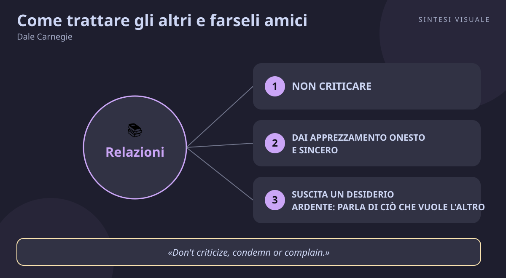

Home / Libri / Come trattare gli altri e farseli amici

Come trattare gli altri e farseli amici
Dale Carnegie · Persuasione e relazioni
«Come trattare gli altri e farseli amici»
- Non criticare
- Apprezzamento sincero
- Desiderio altrui
- Ascolto e nomi
🧭Introduzione
Dale Carnegie nasce nel 1888 in una fattoria povera del Missouri, fa il venditore porta a porta, poi l'attore mancato, poi — quasi per caso — l'insegnante di oratoria serale in un YMCA di New York. Dal 1912 in poi, per oltre vent'anni, ascolta migliaia di adulti — venditori, impiegati, imprenditori — raccontare i propri fallimenti con le persone: clienti persi per una parola di troppo, dipendenti demotivati a colpi di rimproveri, matrimoni logorati dalle critiche. Da quel materiale vivo, e dagli appunti presi in aula da un editore che frequentava il suo corso, nel 1936 nasce un libro di 291 pagine che nessuno si aspettava: tiratura iniziale di 5.000 copie, 17 ristampe nel solo primo anno, oltre 30 milioni di copie vendute fino a oggi, uno dei libri più venduti di tutti i tempi. Warren Buffett lo lesse a vent'anni e ancora oggi tiene appeso in ufficio il diploma del corso Carnegie.
Perché conta oggi: viviamo di relazioni mediate — email secche, messaggi vocali, riunioni in video, recensioni online — dove un tono sbagliato costa clienti, promozioni e amicizie. Carnegie scrisse prima di internet, ma descrive esattamente ciò che ci manca adesso: la disciplina di trattare ogni persona come se fosse importante, perché per sé stessa lo è. Non è un manuale di furbizia: è un allenamento all'attenzione verso gli altri.
A chi è utile: a chi vende e a chi guida un team, a chi litiga troppo in casa, a chi parla in pubblico o scrive messaggi che vengono fraintesi — e a chiunque abbia mai pensato "ho ragione io, perché non mi ascolta nessuno?".
📘Riassunto
La scintilla centrale: esiste un solo modo per spingere qualcuno a fare qualcosa — farglielo desiderare; se smetti di criticare, apprezzi con sincerità e ragioni in termini di ciò che vuole l'altro, le persone ti verranno incontro da sole, senza che tu debba spingerle.
La struttura logica procede in quattro parti, per un totale di trenta princìpi:
- Le tre tecniche fondamentali — non criticare né condannare né lamentarti; dai apprezzamento onesto e sincero; suscita nell'altro un vivo desiderio parlando di ciò che vuole lui. È il fondamento: senza questo, tutto il resto suona falso.
- Sei modi per farti benvolere — interessati genuinamente agli altri, sorridi, ricorda e usa i nomi, ascolta e incoraggia gli altri a parlare di sé, parla dei loro interessi, fai sentire importante l'altro — sinceramente. La simpatia non si chiede, si provoca occupandosi degli altri.
- Dodici modi per convincere — il modo migliore per avere la meglio in una discussione è evitarla; non dire mai "hai torto"; ammetti in fretta i tuoi errori; comincia in modo amichevole; fai dire subito di sì; lascia parlare l'altro; lascia che l'idea sembri sua; guarda le cose dal suo punto di vista; sii comprensivo; appèllati ai motivi più nobili; drammatizza le idee; lancia una sfida. Persuadere senza mai umiliare.
- Nove regole per guidare senza offendere — inizia con lodi e apprezzamenti; segnala gli errori indirettamente; parla prima dei tuoi sbagli; fai domande invece di dare ordini; lascia salvare la faccia; loda ogni progresso; affida una bella reputazione da onorare; incoraggia; rendi piacevole ciò che proponi. Cambiare le persone senza creare risentimento.
Il punto di svolta: il capitolo "se vuoi raccogliere il miele, non rovesciare l'alveare". Carnegie apre con un paradosso criminale: persino assassini condannati si dichiarano innocenti ai propri occhi. Se nemmeno i colpevoli ammettono le colpe sotto accusa, nessuna critica ha mai cambiato nessuno — ha solo messo qualcuno sulla difensiva. Da lì in poi il lettore capisce che ogni rimprovero "efficace" che ha dato in vita sua non ha mai funzionato davvero.
L'eredità oggi: il libro ha fondato il moderno genere dei corsi sulle relazioni umane (i corsi Dale Carnegie operano ancora in decine di paesi), è stato indicato dalla Biblioteca del Congresso tra i libri più influenti d'America ed è il nonno dichiarato di tutta la letteratura su persuasione ed empatia — da Cialdini a Goleman, da Covey ("cerca prima di capire, poi di essere capito") ai manuali di vendita moderni.
💡Concetti chiave
- Non criticare, non condannare, non lamentarti: la critica mette sulla difensiva e non corregge nessuno — nemmeno chi ha davvero torto.
- Dai apprezzamento onesto e sincero: ogni persona ha fame di sentirsi importante; l'apprezzamento specifico nutre, la lusinga generica insospettisce.
- Suscita un desiderio ardente: parla di ciò che vuole l'altro: a pesca si usa l'esca che piace al pesce, non a te — lo stesso vale per ogni richiesta.
- Sii interessato, non interessante: sorriso, nome ricordato, ascolto vero e conversazione sui suoi interessi valgono più di qualunque monologo brillante.
- Evita le discussioni: nessuno vince litigando: anche vincendo perdi la persona; parti dai punti d'accordo (il "segreto di Socrate") e ammetti in fretta i tuoi errori.
- Cambia le persone senza offendere: lode prima, errori segnalati con tatto, domande invece di ordini, faccia salva e una bella reputazione da onorare.
📖1. Non criticare, non condannare, non lamentarti
- Definizione criticare qualcuno non lo corregge, lo arma: l'istinto di difendere la propria immagine scatta prima di qualsiasi ragionamento, e il messaggio va perduto. Vale per i criminali come per i colleghi — nessuno si sente mai nel torto.
- Esempio il capo che in riunione dice "questo report fa schifo, rifallo" ottiene un report rifatto male e un collaboratore che da quel giorno lavora contro di lui in silenzio. Lo stesso capo che dice "i dati sono buoni, ma la presentazione non rende giustizia al tuo lavoro: sistemiamo insieme le slide?" ottiene un report ottimo e lealtà.
- Come applicarlo (a) quando stai per criticare, fermati e chiediti "cosa otterrò davvero?"; (b) separa il fatto dal giudizio: descrivi l'effetto ("questo ritardo mette in difficoltà il team") invece di etichettare la persona; (c) se proprio devi segnalare un errore, fallo in privato, mai davanti ad altri.
- Errore comune credere che criticare "per il suo bene" aiuti: il bene dell'altro richiede che ti ascolti, e chi si sente attaccato smette di ascoltare all'istante.
- Collegamento B. F. Skinner e il rinforzo positivo — si impara premiando i comportamenti giusti, non punendo quelli sbagliati; lo stesso principio anima la leadership gentile di Never Split the Difference di Chris Voss (prima calma, poi tratta).
📖2. Dai apprezzamento onesto e sincero
- Definizione il bisogno più profondo dell'essere umano, secondo Carnegie e lo psicologo William James, è sentirsi importante. L'apprezzamento onesto — specifico, meritato, detto col cuore — soddisfa quel bisogno; la lusinga — generica, interessata, esagerata — lo offende, perché la gente se ne accorge.
- Esempio "bravo, ottimo lavoro" detto di fretta non lascia traccia; "il modo in cui hai gestito quel cliente difficile al telefono — calmo, senza interrompere — ci ha salvato il contratto, grazie" viene ricordato per anni e ripetuto a casa a cena.
- Come applicarlo (a) ogni giorno nota una cosa specifica fatta bene da qualcuno e dilla entro 24 ore; (b) sii preciso: cosa, quando, che effetto ha avuto; (c) apprezza anche i piccoli progressi, non solo i trionfi — soprattutto con figli e collaboratori junior.
- Errore comune confondere quantità e qualità — dieci complimenti vuoti valgono meno di uno vero, e chi adula troppo viene marchiato come manipolatore al primo sospetto.
- Collegamento il elogio del processo di Carol Dweck (Mindset): lodare l'impegno specifico ("hai lavorato sodo su quei calcoli") costruisce più crescita che lodare il talento ("sei un genio").
📖3. Suscita un desiderio ardente: parla di ciò che vuole l'altro
- Definizione esiste un solo modo per indurre qualcuno a fare qualcosa: farglielo venire voglia. Henry Ford lo diceva così: il successo sta nel mettersi dal punto di vista dell'altro e vedere le cose con i suoi occhi. Prima di chiedere, scopri cosa ci guadagna lui.
- Esempio vuoi che tuo figlio adolescente riordini la stanza? "Riordina perché lo dico io" non funziona da anni. "Se riordiniamo insieme in mezz'ora, abbiamo tutta la sera libera per il film che volevi vedere" collega la tua richiesta al suo desiderio — e la stanza si riordina.
- Come applicarlo (a) prima di ogni richiesta scriviti la risposta a "cosa ci guadagna lui/lei?"; (b) apri sempre da lì: benefici per l'altro prima, dettagli pratici dopo; (c) nelle trattative, chiedi esplicitamente quali sono le priorità dell'altro prima di presentare le tue.
- Errore comune presentare la richiesta dal proprio punto di vista ("ho bisogno che tu...", "per me è importante...") e stupirsi della freddezza altrui: nessuno si entusiasma per i tuoi problemi.
- Collegamento il secondo principio di Getting to Yes di Fisher e Ury — negozia sugli interessi (i bisogni veri dell'altro), non sulle posizioni; e il marketing moderno, che vende benefici, non caratteristiche.
📖4. Sii interessato, non interessante
- Definizione la simpatia non si conquista impressionando, ma interessandosi: due mesi passati a occuparsi sinceramente degli altri creano più amicizie di due anni passati a cercare di farsi ammirare. Sorriso, memoria dei nomi, ascolto e attenzione ai loro interessi sono gli strumenti.
- Esempio a una cena di lavoro, invece di raccontare i tuoi successi, chiedi al vicino "e tu di cosa ti occupi in questo periodo?" e ascolti davvero, facendo domande. Alla fine della serata lui dirà di te "che persona brillante e interessante" — senza che tu abbia quasi parlato di te.
- Come applicarlo (a) impara e usa i nomi: ripetilo appena lo senti, usalo nel saluto, collegalo a un dettaglio ("Marco, quello delle moto"); (b) sorridi davvero quando incontri qualcuno — il volto comunica prima delle parole; (c) fai domande sugli interessi dell'altro prima di parlare dei tuoi, almeno nei primi minuti di ogni conversazione.
- Errore comune fare finta di ascoltare mentre si prepara la propria battuta — controllare il telefono o guardare oltre le spalle annulla tutto e viene notato sempre.
- Collegamento l'ascolto attivo di Carl Rogers e l'empatia di Daniel Goleman (Intelligenza emotiva): sentirsi ascoltati abbassa le difese e apre alla collaborazione, in famiglia come in azienda.
📖5. Evita le discussioni: nessuno vince litigando
- Definizione nove volte su dieci una discussione finisce con entrambi più convinti di prima: chi "vince" con la logica perde la buona disposizione dell'altro. Carnegie propone la via socratica: parti da ciò su cui siete d'accordo, accumula dei sì, rispetta le opinioni altrui e ammetti in fretta i tuoi errori per disarmare l'avversario.
- Esempio il cliente dice "il vostro servizio costa troppo". Rispondere "si sbaglia, guardi i nostri costi" chiude ogni porta. Rispondere "ha ragione a guardare il prezzo con attenzione — posso chiederle quali voci le sembrano fuori mercato, così le mostro cosa includono?" trasforma lo scontro in un'analisi comune, e spesso in una vendita.
- Come applicarlo (a) quando senti salire la discussione, dì "può darsi che abbia ragione lei, mi aiuti a capire il suo punto" — e intanto respira; (b) non dire mai "lei sbaglia": sostituisci con "la vedo diversamente, vediamo i fatti insieme"; (c) se hai torto, ammettilo subito e con enfasi: toglie all'altro ogni motivo di attaccarti.
- Errore comune confondere l'evitare lo scontro con il cedere sempre: Carnegie non chiede di dare ragione a tutti, ma di convincere senza umiliare — la fermezza resta, cambia il metodo.
- Collegamento il "segreto di Socrate" dialogico e la prima regola di Getting to Yes — separa le persone dal problema: attacca il merito, proteggi la relazione.
📖6. Cambia le persone senza offendere
- Definizione guidare — un figlio, un team, un partner — senza creare risentimento è un'arte con regole precise: inizia sempre con apprezzamento sincero, segnala gli errori indirettamente, parla prima dei tuoi sbagli, fai domande invece di dare ordini, lascia salvare la faccia e affida all'altro una bella reputazione da onorare.
- Esempio un collaboratore arriva sempre tardi alle riunioni. Invece di "sei sempre in ritardo, è inaccettabile", prova: "sei uno dei più affidabili quando si tratta di rispettare le scadenze dei clienti [reputazione da onorare] — come possiamo fare perché anche le nostre riunioni partano puntuali? [domanda]". Stesso messaggio, esito opposto.
- Come applicarlo (a) ogni correzione si apre con qualcosa di vero e positivo; (b) trasforma gli ordini in domande: "pensi che funzionerebbe se...?" invece di "fai così"; (c) correggi in privato, loda in pubblico — sempre; (d) rendi l'errore facile da correggere: "è un piccolo aggiustamento, non un problema".
- Errore comune il "panino" fatto male — lode finta + critica vera + lode finta: dopo due volte la gente sente solo la critica e diffida anche delle lodi vere.
- Collegamento la leadership risonante di Goleman e il feedback efficace della psicologia del lavoro: proteggere la dignità non è buonismo, è la condizione perché il cambiamento venga accettato.
💬Citazioni da ricordare
"Don't criticize, condemn or complain." — Non criticare, non condannare, non lamentarti: la regola d'apertura del libro, da rileggere ogni mattina prima di aprire bocca. (parte 1)
"The only way to get the best of an argument is to avoid it." — Il solo modo di avere la meglio in una discussione è evitarla: vincere litigando costa sempre la relazione. (parte 3)
"Remember that a person's name is to that person the sweetest and most important sound in any language." — Ricorda che per una persona il suo nome è il suono più dolce e importante in qualsiasi lingua: lo strumento più semplice e più trascurato per far sentire importante qualcuno. (parte 2)
🌍Esempi di oggi
- Il messaggio di lavoro frainteso. Scrivi su WhatsApp "dobbiamo parlare del report" e il collega passa una notte insonne. Applicando Carnegie: apri con apprezzamento specifico e formula una domanda ("il capitolo sui dati è ottimo — hai dieci minuti domani per sistemare insieme la chiusura?"). Stesso contenuto, zero ansia.
- La recensione negativa al ristorante. Il cliente arrabbiato scrive una stella online. Il gestore che risponde "lei sbaglia, da noi..." perde dieci futuri clienti; quello che risponde "ha ragione a essere deluso, mi dispiace — mi racconta cosa è successo così rimedio?" trasforma spesso il critico nel recensore più fedele. Ammettere e ascoltare batte sempre il ribattere.
- Il figlio e i compiti. "Se non studi non diventi niente" è critica pura: chiude orecchie e cuore. "Ho visto che in matematica sei migliorato tanto con gli esercizi — e se applicassimo lo stesso metodo all'inglese, pensi che funzionerebbe?" unisce lode specifica, reputazione da onorare e domanda invece di ordine: tre princìpi in una frase.
🛠️Azioni pratiche
"Come trattare gli altri e farseli amici" (How to Win Friends and Influence People) — Dale Carnegie, 1936 (Simon & Schuster; ed. italiana Bompiani)
🛠️Azioni pratiche
- Zero critiche per 24 ore (un giorno intero): per un giorno, ogni volta che stai per criticare, condannare o lamentarti di qualcuno, fermati e riformula in termini di effetto o di domanda. A sera, annota quante volte ci sei riuscito e cosa è cambiato nel tono delle conversazioni.
- Un apprezzamento specifico al giorno (5 minuti al giorno): ogni giorno per una settimana, di' a una persona diversa una cosa precisa che ha fatto bene — cosa, quando, che effetto ha avuto. Niente complimenti generici: solo fatti veri.
- Prepara una richiesta "a misura di pesce" (15 minuti, una volta): prendi una richiesta che devi fare (al capo, al partner, a un cliente) e riscrivila partendo dai benefici per l'altro: "cosa ci guadagna lui/lei?". Provala davvero entro sette giorni e osserva la differenza di reazione.
💎Da portare a casa
Tratta ogni persona come se fosse importante — perché per sé stessa lo è: smetti di criticare, apprezza con sincerità e ragiona dal suo punto di vista, e il mondo comincerà a darti ragione senza che tu debba alzare la voce.
💬Approfondimento in chat
Rispondi con il numero (1-6) del concetto che vuoi espandere ulteriormente, oppure con un tema a cui vuoi dedicare il prossimo libro: public speaking, vendite, persuasione, stress, emozioni, carriera...
🖼️In un colpo d’occhio

Tocca l’immagine per ingrandirla.